전방 좌측
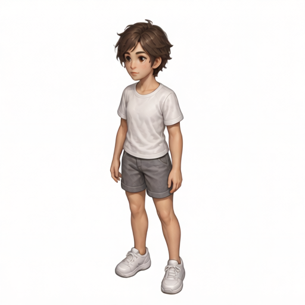
2026-09-27_17-19-41-796ec3dd
standing-v9
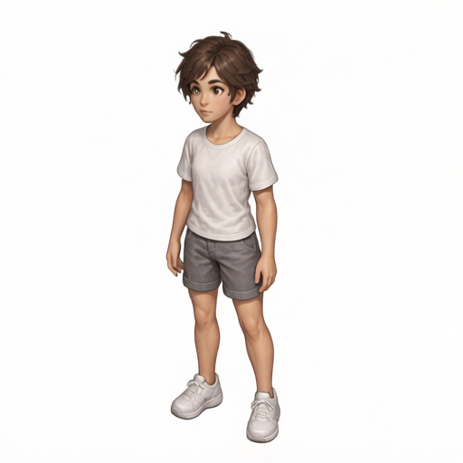
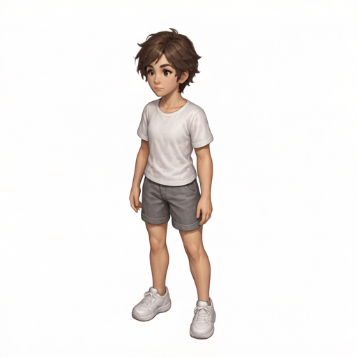
전방 우측
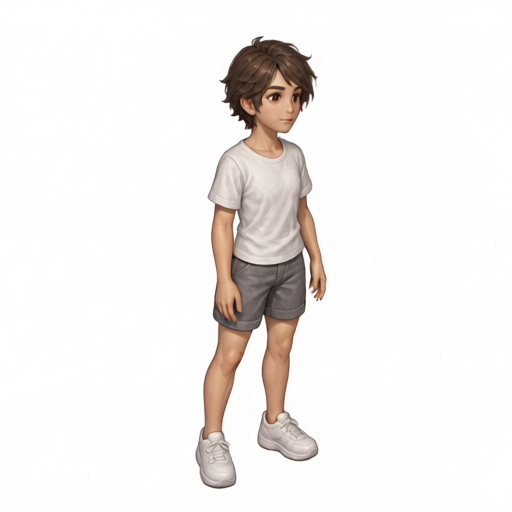
2026-09-27_17-19-41-796ec3dd
standing-v9
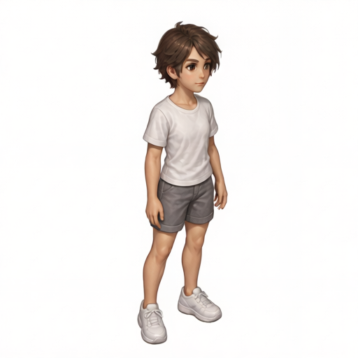
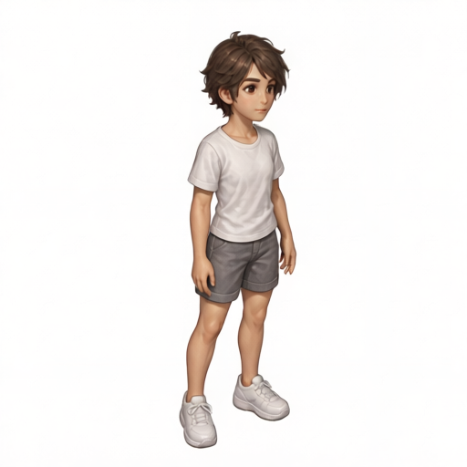
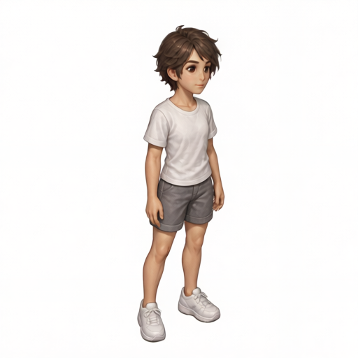
후방 좌측
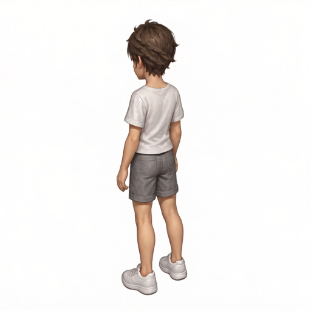
2026-09-27_17-19-41-796ec3dd
standing-v9
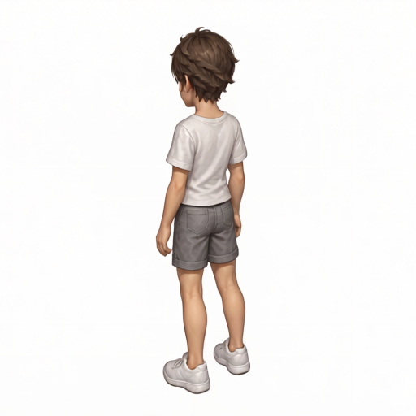
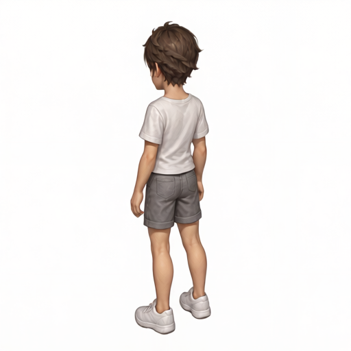
후방 우측
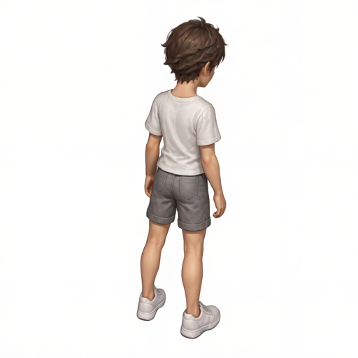
2026-09-27_21-05-00-34bd3a5f
standing-v10
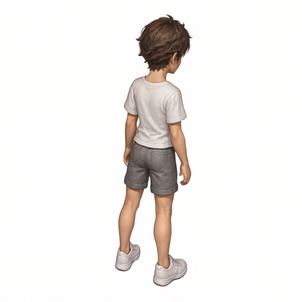
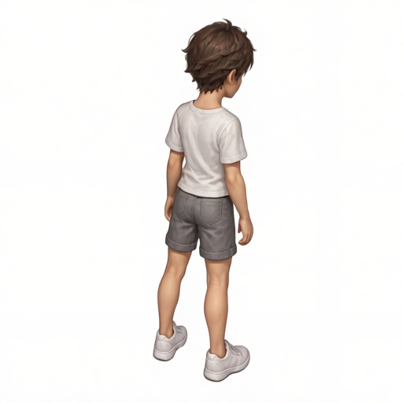
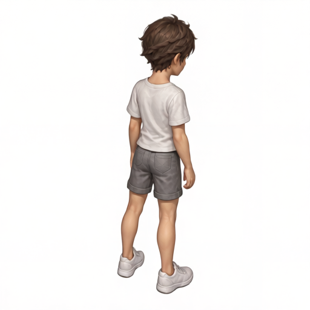